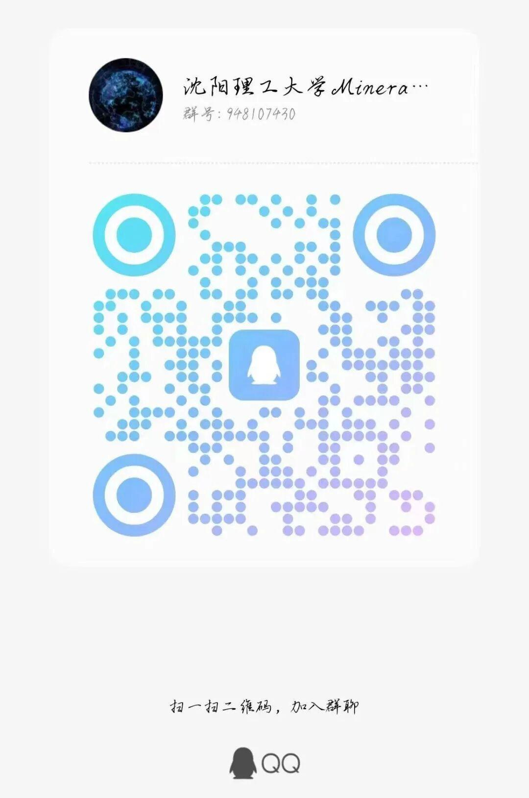
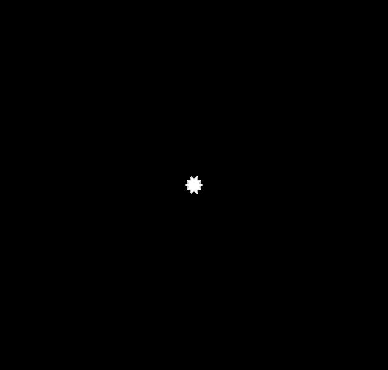

新一届理工杯等你参加！
向右滑→

今年第九届“理工杯”机器人大赛即将拉开序幕
下面让我们一起了解一下比赛规则吧！
01
比赛日程
参赛人员需2023年11月15日22：00前，下载参赛通知群群文件中的报名表并完成报名表提交工作。
收表时间截止至：
2023年11月15日22：00
收表方式：发送到邮箱：
1769236044@qq.com
02
奖项设置
奖项 | 排名 | 数量 | 奖励 |
校一等奖 | 冠军 | 1 | 冠军奖杯 |
亚军 | 1 | 亚军奖杯 | |
季军 | 1 | 季军奖杯 | |
校二等奖 | 待定 | ||
校三等奖 | 待定 | ||
最美观奖 | 神秘奖品 | ||
最抽象奖 | 神秘礼品 | ||
注：（奖项数量最终以学校规定为准，二等奖待定组数不会小于3组，三等奖待定组数不会小于5组）
03
参赛队伍要求
1、一支队伍最多可5名队员，且必须符合参赛人员要求，严格杜绝任何挂名提名现象。保证比赛的公平性和竞技性。
违规判罚：一经发现，取消比赛资格。
2、任一参赛队员在MIM2023期间只能参加一只参赛队伍。
违规判罚：违者驳回报名申请。
3、参赛队伍需要根据自身情况对于自己的队伍和参赛机器人分别命名，统一填报格式为：参赛队的队伍名称，队伍自定义名称不得超过16个字符（每个汉字计两个字符，每个英文字母计一个字符），队名需体现参赛队伍积极进取德精神，需符合沈阳理工校规校纪。
违规判罚：驳回报名申请，修改队名直至符合要求重新提交。
4、每队必须有队长一名。
违规判罚：驳回报名申请，修改队员信息直至符合要求重新提交。
5、小车底盘动力系统最多可用4枚小黄电机，3D打印件总重不得超过全车重量10％，且方便拆卸检查，禁止成品套件机加件。
违规判罚：取消上场资格。
04
比赛流程
比赛分为小组赛和淘汰赛两部分。小组赛中每场比赛会获得积分，而淘汰赛中则会对应地淘汰队伍。
比赛安排
1
小组赛
小组赛每场比赛分为上下两局比赛，小组赛期间，将所有参赛队伍分成若干小组，小组中每两支队伍之间连续进行两局比赛，每一小组取胜场前两名进入淘汰赛。
小组赛计分规则如下：
输赢 | a队 | b队 |
2:0 | 3 | 0 |
1:1 | 1 | 1 |
0:2 | 0 | 3 |
2
淘汰赛
淘汰赛分为一般淘汰赛和四强赛，一般淘汰赛采用一场决胜负的赛制。四强以上将采取BO3（三局两胜）赛制。
扫码进群，了解更多ↆ


新的一轮征战即将开始，
但对梦想的追求永无止境！
知君志不小，一举凌鸿鹄。
祝愿大家在比赛中取得好成绩！
推文|青唐三月
审核|XX敏